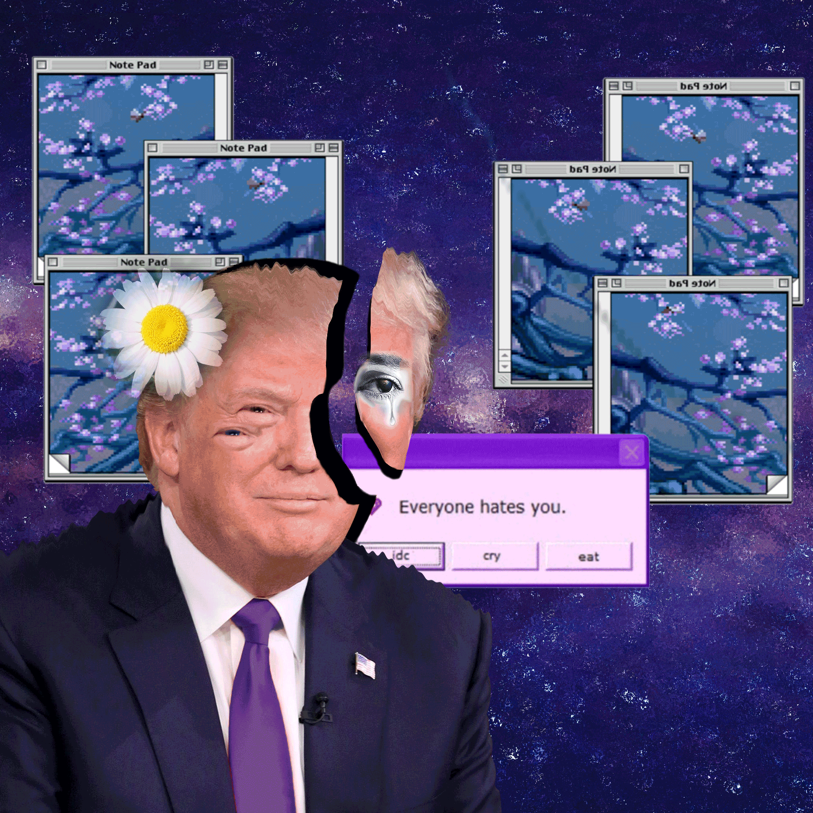
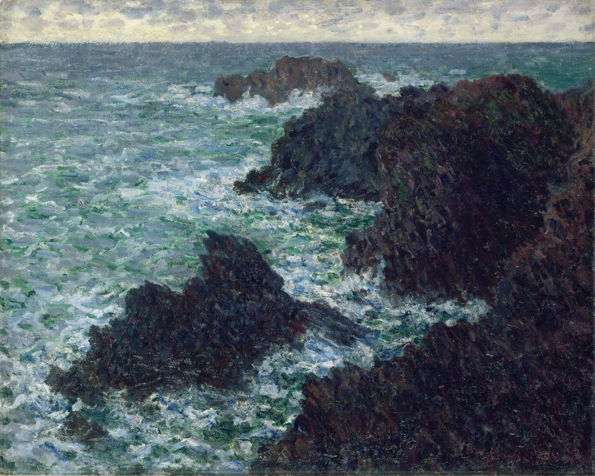
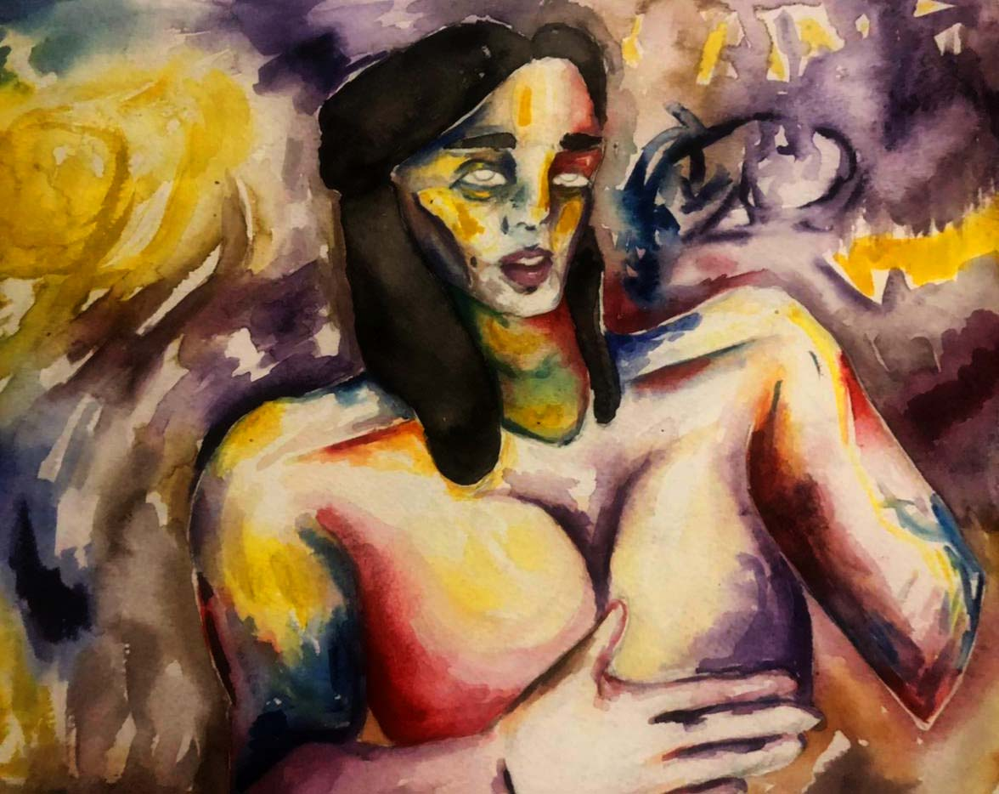

Portafolio Octavio Felice

Sobre mi
Soy Octavio, nací tristemente en un pueblito ubicado en la provincia de buenos aires, era un pueblo aburrido. Actualmente estoy viviendo en Plata con mi hermana. Mis referentes artísticos son Frida Kahlo, Solana, Toulouse-Lautrec, de Chirico, Lucian Freud (es mi favorito) también me influencia muchos artistas de Instagram como Jenny Saville, kelogsloops, Kildren y Ko Byung Jun. Además me apasiona el cine japonés, las películas anime como perfect blue o la princesa mononoke. Tuve la suerte de poder ir al museo Picasso de Francia y me encanto, pero también me genera la controversia por el tipo de vida que llevo. He visto varias muestras de artistas argentinos en el malba como Carlos Alonso, Luis Felipe Noe, Raquel Forner y Julio le Parc. Mi material favorito es el óleo y mi color favorito es el azul ultramar, el color que menos me gusta es el verde. Arranque a pintar con acuarelas a los 14.
Obra
Soy Octavio, nací tristemente en un pueblito ubicado en la provincia de buenos aires, era un pueblo aburrido. Actualmente estoy viviendo en Plata con mi hermana. Mis referentes artísticos son Frida Kahlo, Solana, Toulouse-Lautrec, de Chirico, Lucian Freud (es mi favorito) también me influencia muchos artistas de Instagram como Jenny Saville, kelogsloops, Kildren y Ko Byung Jun. Además me apasiona el cine japonés, las películas anime como perfect blue o la princesa mononoke. Tuve la suerte de poder ir al museo Picasso de Francia y me encanto, pero también me genera la controversia por el tipo de vida que llevo. He visto varias muestras de artistas argentinos en el malba como Carlos Alonso, Luis Felipe Noe, Raquel Forner y Julio le Parc. Mi material favorito es el óleo y mi color favorito es el azul ultramar, el color que menos me gusta es el verde. Arranque a pintar con acuarelas a los 14.


Productos
Soy Octavio, nací tristemente en un pueblito ubicado en la provincia de buenos aires, era un pueblo aburrido. Actualmente estoy viviendo en Plata con mi hermana. Mis referentes artísticos son Frida Kahlo, Solana, Toulouse-Lautrec, de Chirico, Lucian Freud (es mi favorito) también me influencia muchos artistas de Instagram como Jenny Saville, kelogsloops, Kildren y Ko Byung Jun. Además me apasiona el cine japonés, las películas anime como perfect blue o la princesa mononoke. Tuve la suerte de poder ir al museo Picasso de Francia y me encanto, pero también me genera la controversia por el tipo de vida que llevo. He visto varias muestras de artistas argentinos en el malba como Carlos Alonso, Luis Felipe Noe, Raquel Forner y Julio le Parc. Mi material favorito es el óleo y mi color favorito es el azul ultramar, el color que menos me gusta es el verde. Arranque a pintar con acuarelas a los 14.
Pequeña Galeria

Monet
Imagen extraida de internet como forma de ejemplificacion de la forma que me gustaria exponer las imagenes en mi trabajo final.

Trabajo Personal
Utlice imagenes superpuesta para generar el efecto, luego fueron editadas en Photoshop.

Trabajo Personal
Utlice imagenes superpuesta para generar el efecto, luego fueron editadas en Photoshop.
Collage Satirico New
Producido como gif apartir de Photoshop, realizado el 31/11/21